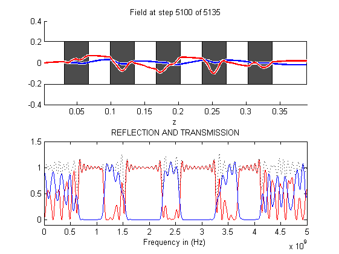
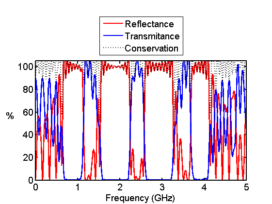

Contents
close all;
clc;
clear all;
meters=1;
centimeters= 1e-2*meters;
millimeters=1e-3*meters;
inches=2.54*centimeters;
feet=12*inches;
second=1;
hertz=1/second;
kilohertz=1e3*hertz;
megahertz=1e6*hertz;
gigahertz=1e9*hertz;
c0=299792458*meters/second;
e0=8.8541878176e-12*1/meters;
u0=1.2566370614e-6*1/meters;
figure('Color','w');
DASHBOARD
fmax=5.0*gigahertz;
NFREQ=1000;
FREQ=linspace(0,fmax,NFREQ);
dslab=0.15*feet;
erair=1.0;
erslab=12.0;
ermax=max([erair erslab]);
nmax=sqrt(ermax);
NLAM=10;
NDIM=1;
NBUFZ=[100,100];
COMPUTE OPTIMIZED GRID
lam0=c0/fmax;
dz1=lam0/nmax/NLAM;
dz2=dslab/NDIM;
dz=min([dz1 dz2]);
nz=ceil(dslab/dz);
dz=dslab/nz;
Nz=round(dslab/dz)+sum(NBUFZ)+3;
za=[0:Nz-1]*dz;
BUILD DEVICE ON GRID
ER=erair*ones(1,Nz);
UR=ones(1,Nz);
for i=20:40:Nz-20
ER(i:i+20)=erslab;
end
BUILD DEVICE ON GRID
nbc=sqrt(UR(1)*ER(1));
dt= nbc*dz/(2*c0);
tau=0.5/fmax;
t0=5*tau;
tprop = nmax*Nz*dz/c0;
t= 2*t0+3*tprop;
STEPS=ceil(t/dt);
t=[0:STEPS-1]*dt;
s =dz/(2*c0)+dt/2;
nz_src=2;
Esrc=exp(-((t-t0)/tau).^2);
A =-sqrt(ER(nz_src)/UR(nz_src));
Hsrc=A*exp(-((t-t0+s)/tau).^2);
INITIALIZE FDTD PARAMETERS
K=exp(-1i*2*pi*dt*FREQ);
REF=zeros(1,NFREQ);
TRN=zeros(1,NFREQ);
SRC=zeros(1,NFREQ);
mEy=(c0*dt)./ER;
mHx=(c0*dt)./UR;
Ey=zeros(1,Nz);
Hx=zeros(1,Nz);
H1=0; H2=0 ;H3=0;
E1=0; E2=0; E3=0;
PERFORM FDTD ANALYSIS
for T=1:STEPS
for nz=1:Nz-1
Hx(nz)=Hx(nz)+mHx(nz)*(Ey(nz+1)-Ey(nz))/dz;
end
Hx(Nz)=Hx(Nz)+mHx(Nz)*(E3-Ey(Nz))/dz;
Hx(nz_src-1)=Hx(nz_src-1)-mHx(nz_src-1)*Esrc(T)/dz;
H3=H2;
H2=H1;
H1=Hx(1);
Ey(1)=Ey(1)+mEy(1)*(Hx(1)-H3)/dz;
for nz=2:Nz
Ey(nz)=Ey(nz)+mEy(nz)*(Hx(nz)-Hx(nz-1))/dz;
end
Ey(nz_src)=Ey(nz_src)-mEy(nz_src)*Hsrc(T)/dz;
E3=E2;
E2=E1;
E1=Ey(Nz);
for nf=1:NFREQ
REF(nf)=REF(nf)+(K(nf)^T)*Ey(1);
TRN(nf)=TRN(nf)+(K(nf)^T)*Ey(Nz);
SRC(nf)=SRC(nf)+(K(nf)^T)*Esrc(T);
end
if ~mod(T,100)
subplot(211);
draw1d(ER,Ey,Hx,dz);
xlim([dz,Nz*dz]);
xlabel('z');
title(['Field at step ' num2str(T) ' of ' num2str(STEPS)]);
R=abs(REF./SRC).^2;
T=abs(TRN./SRC).^2;
subplot(212);
plot(FREQ,R,'-r');
hold on;
plot(FREQ,T,'-b');
plot(FREQ,R+T,':k');
xlim([FREQ(1) FREQ(NFREQ)]);
ylim([-0.1 1.5]);
xlabel('Frequency in (Hz)');
title('REFLECTION AND TRANSMISSION');
hold off;
drawnow;
end
end
REF=abs(REF./SRC).^2;
TRN=abs(TRN./SRC).^2;
CON=REF+TRN;

Create a plot
clf;
h=plot(FREQ/gigahertz,100*REF,'-r','LineWidth',2);
hold on;
plot(FREQ/gigahertz,100*TRN,'-b','LineWidth',2);
plot(FREQ/gigahertz,100*CON,':k','LineWidth',2);
hold off;
xlim([FREQ(1) FREQ(NFREQ)]/gigahertz);
ylim([0 105]);
h2=get(h,'Parent');
set(h2,'FontSize',14,'LineWidth',2);
h=legend('Reflectance','Transmitance','Conservation');
set(h,'Location','NorthOutside');
xlabel('Frequency (GHz)');
ylabel('%','Rotation',0,'HorizontalAlignment','right');
